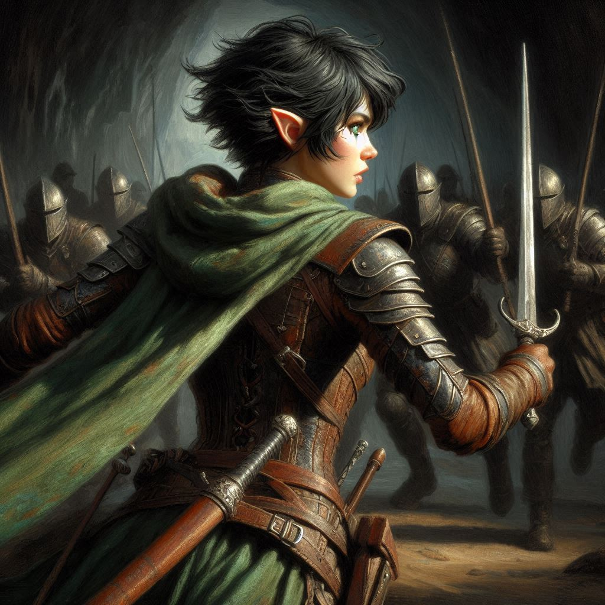
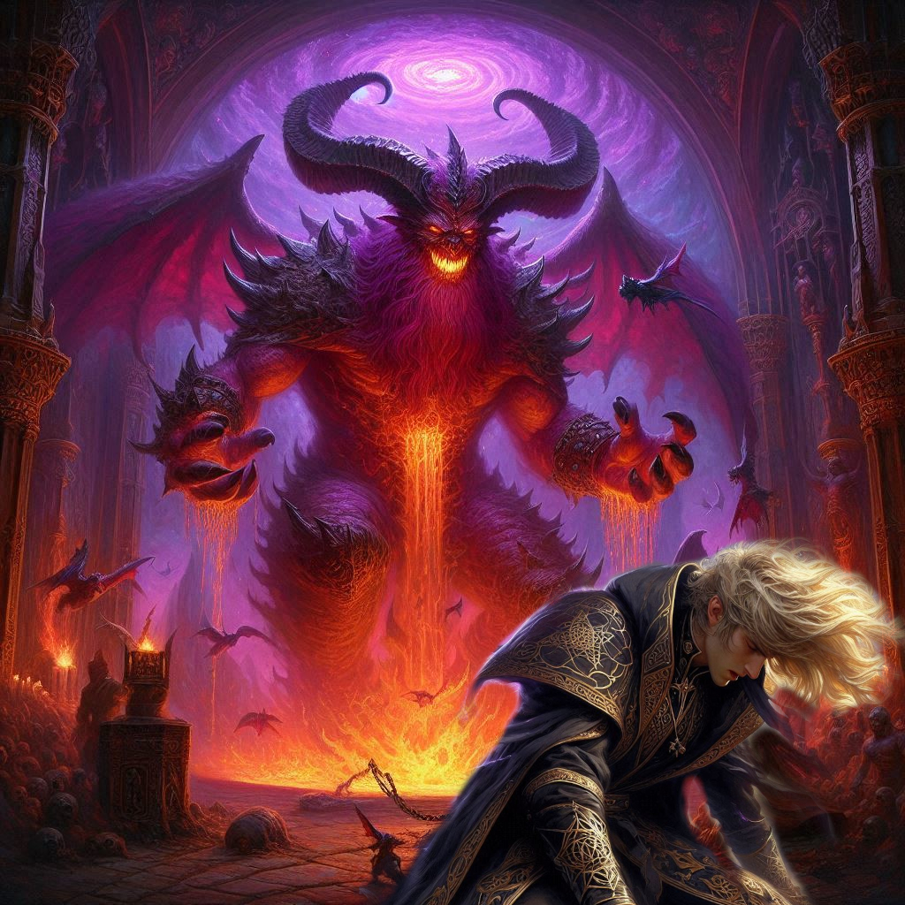

Friends to the End
Elias' voice pierces through the chaos. "Kira! I need you!"
You whirl around, heart pounding, sword slick with dark elf blood. The shadowy battlefield stretches endlessly around you, an eerie glow from the swirling portal to the Realm of Shadows illuminating the carnage. Elias is surrounded, his back against the ancient elvish temple wall, battling fiercely, but you can see the desperation in his eyes. The dark elf soldiers, with their ashen skin and red-glowing eyes, circle him like wolves, blades glinting with malevolent intent.
There’s no time to think, only to act.
You leap into the fray, your sword slicing through the air, cutting down two elves as you land beside Elias. "I've got you!" you shout, breathing heavily, your body aching from the battle already fought.
"There's too many," Elias gasps, his eyes locked on yours for just a moment before deflecting another strike from a dark elf warrior. “We can’t hold them.”
Side by side, the two of you fight, each swing of your weapon pushing back the endless tide of enemies. Your muscles burn with exertion, the weight of exhaustion heavy on your limbs, but you refuse to give in. You glance up, searching for any sign of Jorsh.
High above, near the swirling portal, Jorsh and Varis—the Minister of Trade—engage in a vicious duel of dark magic. Jagged shadows and bolts of crackling energy clash between them, sending shockwaves across the battlefield. Jorsh’s face is twisted in grim determination, his power surging, but Varis, revealed now as the Monarch of the Dark Elf Kingdom, seems unfathomably strong. The sky itself trembles with the magnitude of their fight.
Jorsh’s eyes flicker toward you, pleading, his voice barely audible through the din of battle. "Kira, help me!" His words, filled with urgency, reach your ears even as you parry a strike aimed for Elias’ head. "Together, we can stop this! Stop Yaldaboath before it’s too late!"
For a brief, agonizing moment, your heart stirs. Jorsh, the boy you once loved, the man twisted by darkness but still somehow familiar, is calling to you. But you hesitate. Can you trust him? The memories of your childhood, of the love you once shared, clash violently with the Jorsh before you now—the rogue sorcerer, the betrayer.
Elias, catching your hesitation, grunts as he slashes through another dark elf. "Don’t listen to him, Kira!" he yells, sweat and blood streaking his face. "He’ll betray you again. He’s always been in this for himself!"
Your mind races as more dark elves close in, their eyes glowing with malevolent hunger. The tide of battle is turning against you. You’ve held your ground, but for how much longer? Elias is right. Jorsh has betrayed you once before, leaving you behind in his pursuit of vengeance. But what if this time is different?
A deep, guttural roar erupts from the portal, drawing everyone's attention. Your blood runs cold.
Yaldaboath, the demon overlord of the Shadow Realm, steps through the swirling vortex, his monstrous form towering above the battlefield. His skin is black as midnight, his eyes two burning coals of hatred, his body wreathed in shadow and flame. The ground quakes beneath his feet as he lets out another earth-shattering roar. The very air seems to curdle around him as his presence turns the battlefield into a nightmare.
"Help me, Kira!" Jorsh cries again, his voice breaking with desperation. He hurls a bolt of dark energy at Yaldaboath, but the demon lord barely flinches. “We can stop him, you and I! Please!”
But you can’t reach him. The dark elves swarm around you and Elias, cutting off any hope of escape. Elias grits his teeth, his movements slowing as fatigue overtakes him. You slash and parry, but it feels like you’re fighting the tide itself.
“I’m not leaving you!” you shout to Elias, though the hopelessness of the situation claws at you. There’s no way out. The dark elves press closer, their swords a glinting wall of death.
Suddenly, Varis falls to his knees, defeated, his body convulsing as Jorsh unleashes the full fury of his dark magic. You see it—victory, just within reach. But the triumph on Jorsh’s face fades as Yaldaboath’s immense hand reaches down and grabs him. The demon lord’s laugh rumbles like thunder, shaking the ground.
“No!” Jorsh screams, struggling in vain. Yaldaboath’s maw opens, a swirling void of destruction, and Jorsh is consumed, his screams echoing as he disappears into the demon’s gaping jaws. The betrayal is final. Jorsh’s desperate attempt to control the power of the Shadow Realm has failed, and he is gone.
“Kira!” Elias calls out, his voice hoarse. You turn back to him, your heart hammering in your chest. You’ve been so focused on Jorsh, on the chaos above, that you haven’t noticed the dark elves closing in on Elias.
“No!” you scream, charging toward him. But it’s too late.
A dark elf strikes Elias from behind, his blade plunging into Elias’s back. Elias’s eyes widen in shock, his hand reaching out toward you as he collapses to the ground. Blood pools around him, and you fall to your knees beside him, tears stinging your eyes.
“Elias… no…” you whisper, cradling his head in your lap.
The dark elves close in around you, their weapons gleaming in the dim light. There’s no escape now. Jorsh is gone. Elias is gone. The battle is lost. Yaldaboath looms over the battlefield, his laughter echoing in the distance as his dark minions prepare to march through the portal.
You lift your sword one last time, but it’s no use. The dark elves overpower you, their weapons knocking yours from your grasp. You scream in defiance, but they bind your hands, dragging you toward the portal. Your heart aches, not just from the physical pain but from the deep sense of failure. Belladonna, the Kingdom of Yew, Elias—all of it lost.
And as you are pulled into the shadowy abyss, you wonder if Jorsh would have succeeded if only you would have stayed by his side.